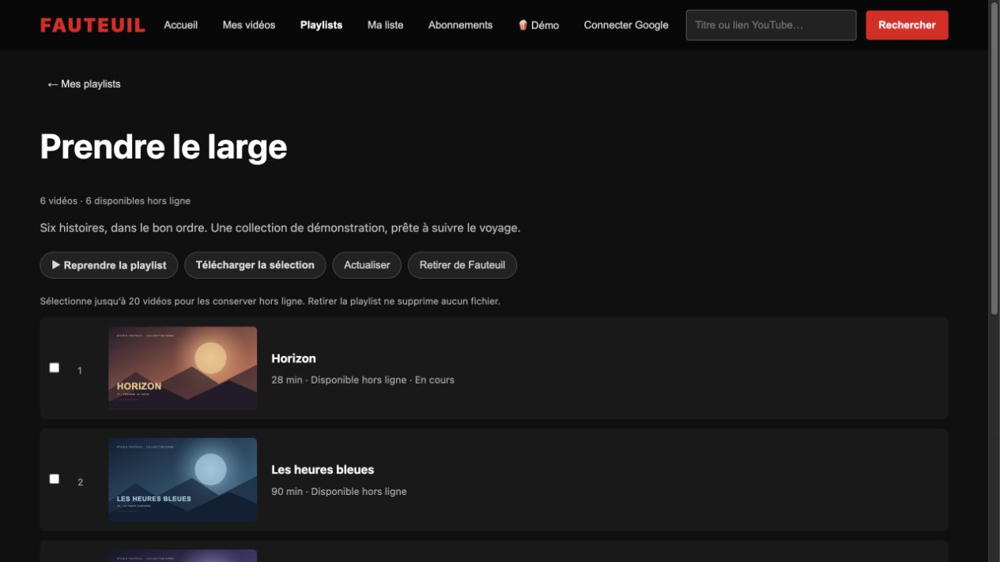

Vidéos locales
Ajoute tes fichiers depuis leur emplacement. Fauteuil regroupe les épisodes par saison et reprend la lecture là où tu l’as laissée.
Retrouve tes films, tes séries et tes playlists YouTube dans Fauteuil. Reprends au dernier arrêt et garde les vidéos de ton choix pour les regarder hors ligne.
Télécharger Fauteuil pour macOSmacOS 15 ou ultérieur · Apple Silicon et Intel

Ajoute tes fichiers depuis leur emplacement. Fauteuil regroupe les épisodes par saison et reprend la lecture là où tu l’as laissée.
Ajoute une playlist publique par son lien. Configure Google pour retrouver tes abonnements et tes playlists personnelles.
Conserve les vidéos de ton choix. Quand le format le permet, commence à regarder pendant le téléchargement.
Décompresse le ZIP, ouvre Fauteuil.app et choisis Installer dans Applications. Si Fauteuil te le propose, installe ses outils depuis l’application. Prévois une connexion Internet et environ 145 Mo de téléchargement pour cette étape.
Un compte Google sert à synchroniser les abonnements et les playlists personnelles. Tu peux lire tes fichiers locaux sans compte. Sur macOS 13 ou 14, utilise la version Fauteuil 1.3.1 avec installation manuelle des outils.

Choisis la bonne version macOS, installe Fauteuil et ses outils, puis vérifie que ta médiathèque locale s’ouvre.
Ajoute une playlist YouTube dans Fauteuil, garde une sélection hors ligne et vérifie qu’elle est prête à regarder.
Ajoute tes vidéos locales sans duplication, range tes épisodes par saison et retrouve la dernière position de lecture.